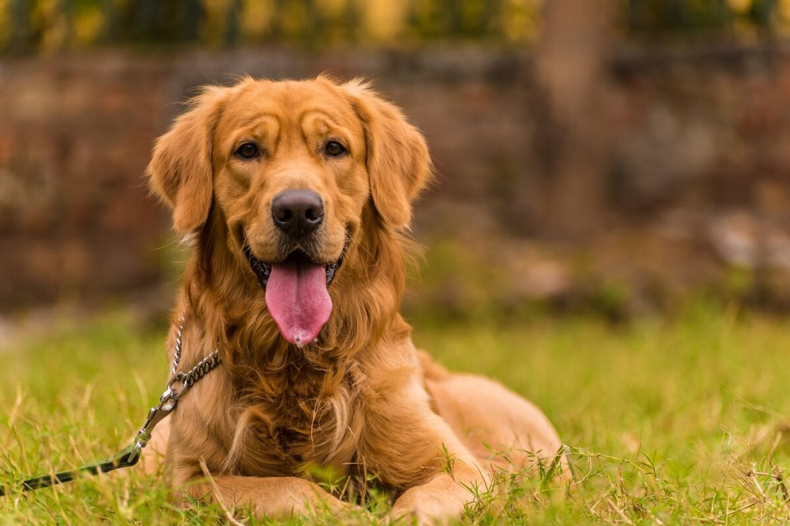
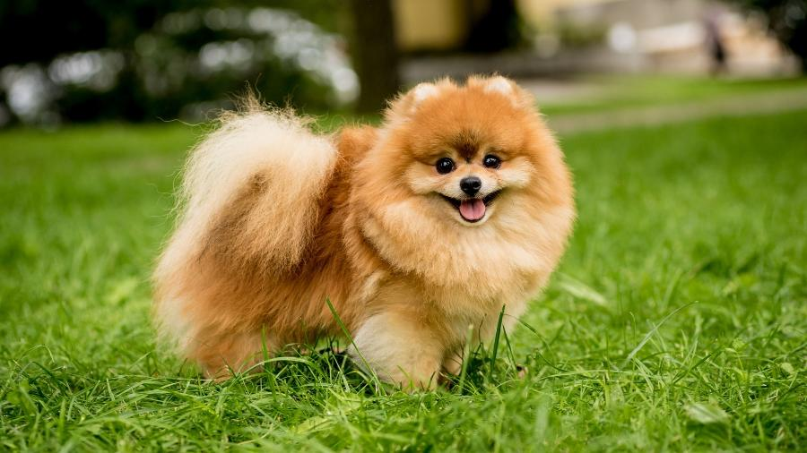
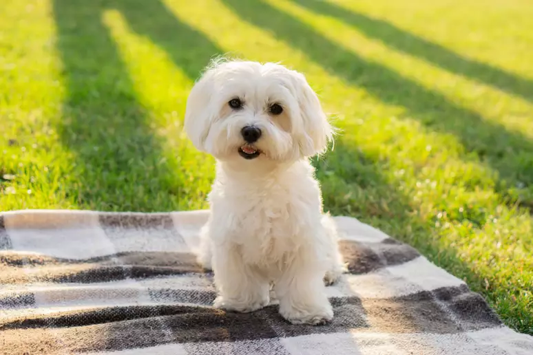
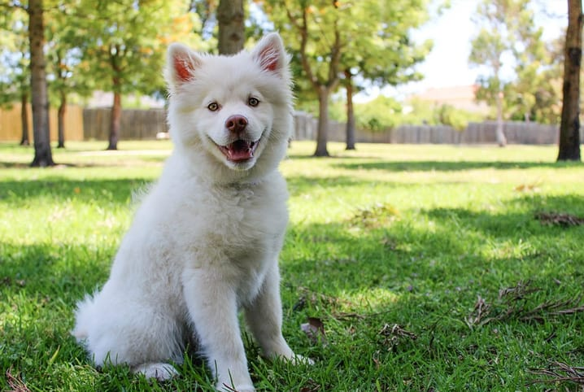

Nossos Bichinhos Esperando um Lar
Conheça os cães e gatos fofos que estão ansiosos para encontrar uma família amorosa como a sua. Clique para saber mais!

Luna
Idade: 2 anos
Calma e carinhosa, adora um abraço.

Frajola
Idade: 6 meses
Cheio de energia, adora brincar com bolinhas.

Buddy
Idade: 3 anos
Leal e protetor, ótimo companheiro de caminhadas.

Amora
Idade: 1 ano e 8 meses
Independente e charmosa, ama tirar um cochilo no sol.